RCPro Meetup
 RCPro had at a Six Flags Magic Mtn meet up and since Cody is a member of RCPro, He took me. By the way, This Viper shot has nothing to do with the update.
RCPro had at a Six Flags Magic Mtn meet up and since Cody is a member of RCPro, He took me. By the way, This Viper shot has nothing to do with the update.
 We are pretty much waiting for X to be fixed since the train got stuck on the f**king lift hill again!!!
We are pretty much waiting for X to be fixed since the train got stuck on the f**king lift hill again!!!
 After 45min of waiting, We ran like hell and ended up being the First ones in line. X was awsome as usual.
After 45min of waiting, We ran like hell and ended up being the First ones in line. X was awsome as usual.
 We also got Special Access to Tatsu and waited less than 5 min instead of 30!
We also got Special Access to Tatsu and waited less than 5 min instead of 30!
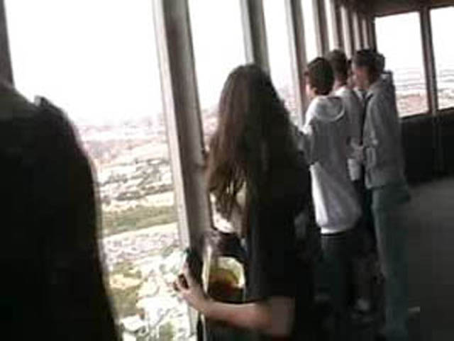
Here are RCPro people shaking the Sky Tower.
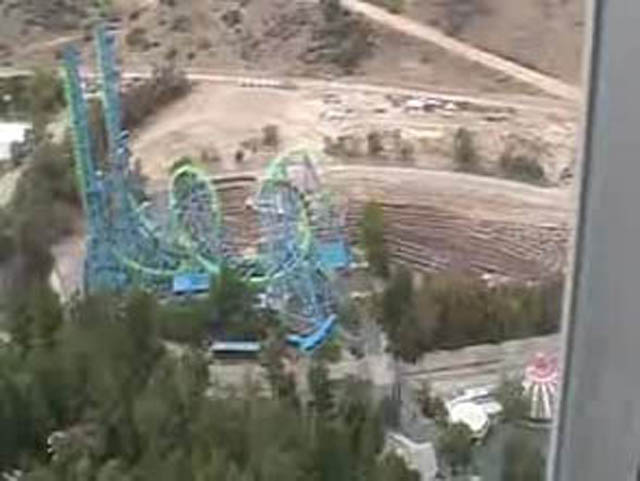
Here are the remains of Psyclone which leads to Cody bursting into tears.
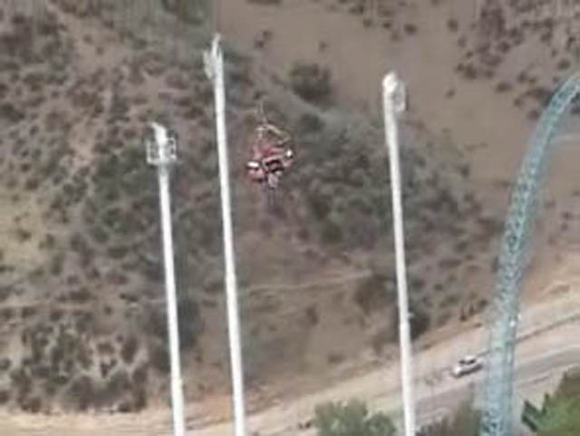
But then he suddenly jumping up and down like a moron on speed shouting "HOLY CRAP!!!! THRILL SHOT IS OPEN!!!!!!!!!!!!!!!!!"
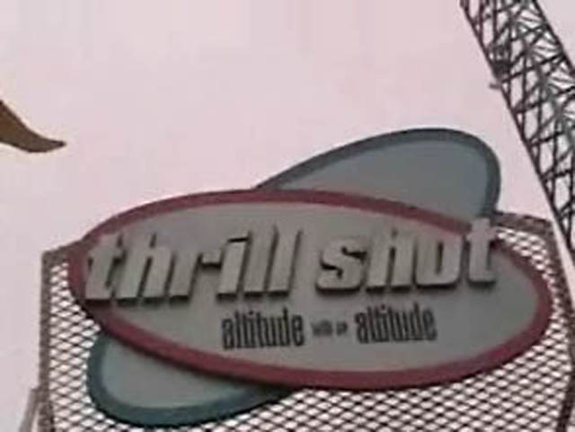
Cody almost had heart attack when paying to finally ride Thrill Shot. Or maybe he just had too much Mountain Dew this moring?
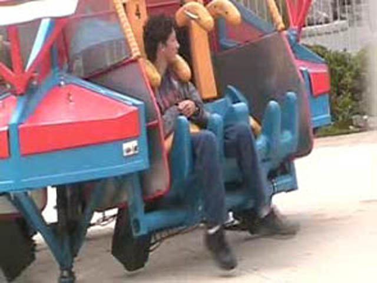
Cody nearly wet himself in excitement when waiting for Thrill Shot to launch.
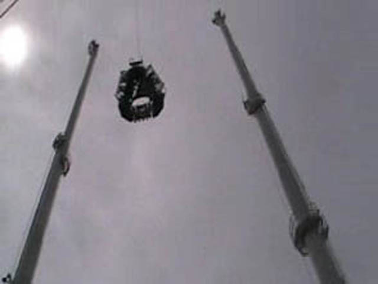
Personally, I wasn't a big fan of it. (Yes I rode it with him.) The launch was slow and the tilting was OK. I don't hate the ride, It's just not worth $15.00. But its still better than Dive Devil for $35.00!!!!
Oh yeah, Magic Mtn got a Wii. We don't know if its better than Robbs though.
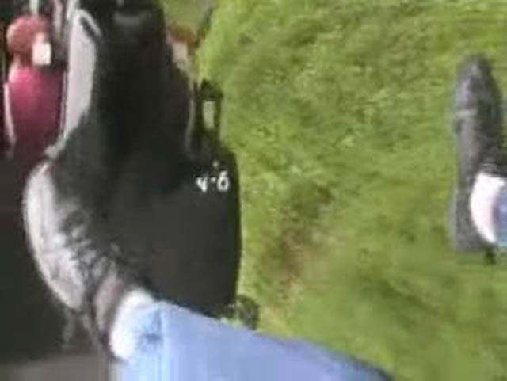
Ladies and Gentelmen, This is how to turn Ninja into a Floorless Coaster
 Here are RCPro people riding Spinout.
Here are RCPro people riding Spinout.
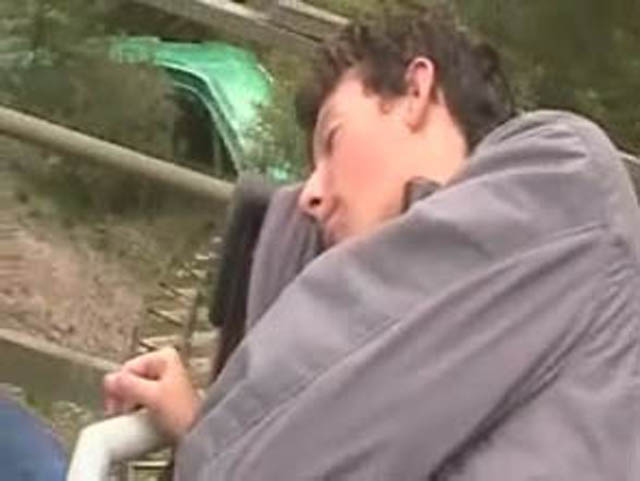
Since I stayed up all night playing Gears of War, I found the perfect ride to get my daily 3 min of sleep on.
Since we didn't have time to eat luch, Cody ate his frech fries on Goliath.
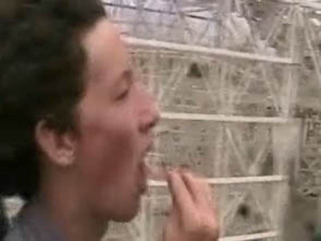
Who needs a death helix when you have fresh cooked golden seasoned freaking french fries!!!!!!!
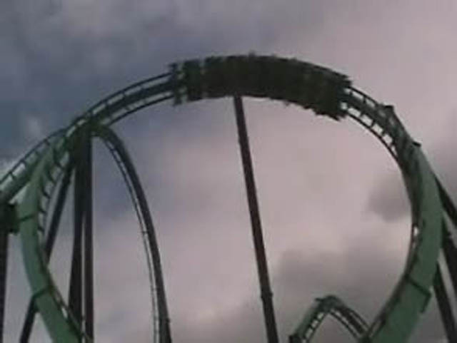
We also got on Riddlers Revenge to get on a good ride.
Riddlers is a hard ride to get a good photo on.
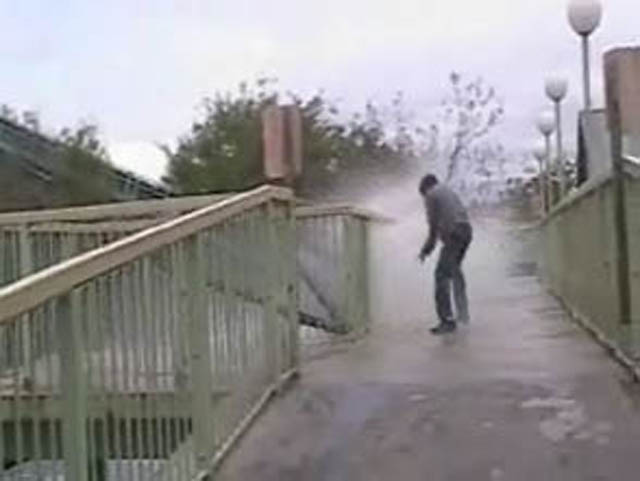
Oh yeah, Before we left, Cody was a dumass and stood on Tidal Waves bridge.
Home